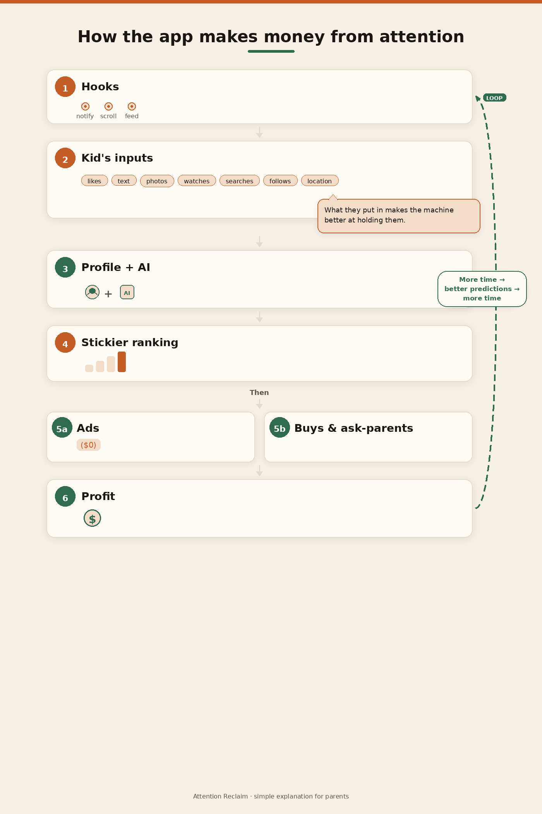

Even when a child buys nothing, the company can still earn. Likes, words, photos, videos, and time on the app help the system hold attention—and sell ads. Sometimes there is a second path: buys, or “ask your parents.”
You are not the customer. Your attention—and the trail of what you do and share—is the product.
The platform can still make money. The child’s time and what they put into the app help show ads to the right people.
The same system can also push products: ads that look like normal posts, influencers, in-app buys, or “ask your parents.”
Both paths use the same fuel: what the child does and shares.
Every action can teach the system.
This is not mind control. It is pattern-matching at a very large scale. The more a child feeds the system, the better it can get at holding them—and at selling access to their attention.
A simple map of how hooks, kids’ inputs, ranking, ads, and buys feed back into stronger hooks.

The feed is free to open. Features are built to keep people there: notifications, endless scroll, autoplay, likes.
Likes, text, photos, videos, follows, watch time, searches, location signals, and more.
Those inputs teach the system what holds this child. Ranking AI tries to predict the next post or video most likely to keep them watching.
The feed is optimized for engagement—more minutes—not for what is best for a child’s growth or an adult’s goals.
The company sells ad space and targeting. A sharper profile from the child’s own inputs can make those ads more valuable—even if the child never buys anything.
The same sharper profile can support influencer posts, ads that blend into the feed, product pushes, in-app purchases, and “ask your parents.” Platforms often earn from ads or store fees.
Money from ads and buys funds more of the same design: better hooks, richer profiles, stickier feeds.
The loop: More input + more time → better predictions → more time → more ads (and more chances to sell).
Children and teens are still learning self-control, sleep, and social habits. Products built for maximum engagement are a poor match for that stage. Designs made for adults are not automatically safe for children (see APA and the U.S. Surgeon General).
Young users are also valuable to the business: early habits, many future years of attention, and data that improves the system. Rules like COPPA exist because children’s data should not be freely monetized.
Younger children can also struggle to see the difference between entertainment and advertising—especially when ads are blurred into normal-looking posts (FTC). That can create want → nagging → a parent purchase, or pressure to buy inside an app.
We talk about influence and commercial pressure. We do not talk about mind control or “guaranteed addiction.”
Feeds are one machine. Generative AI is another. It does not always steal time the same way—but it can steal practice.